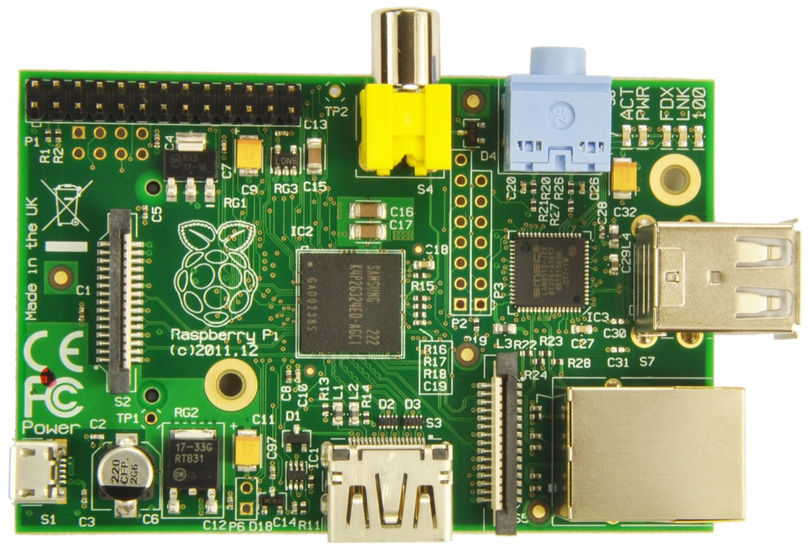
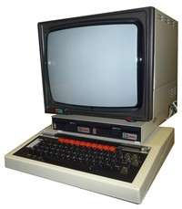
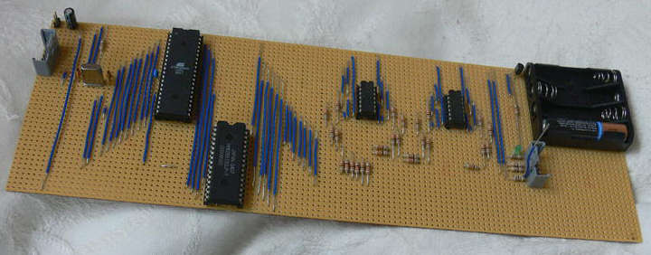
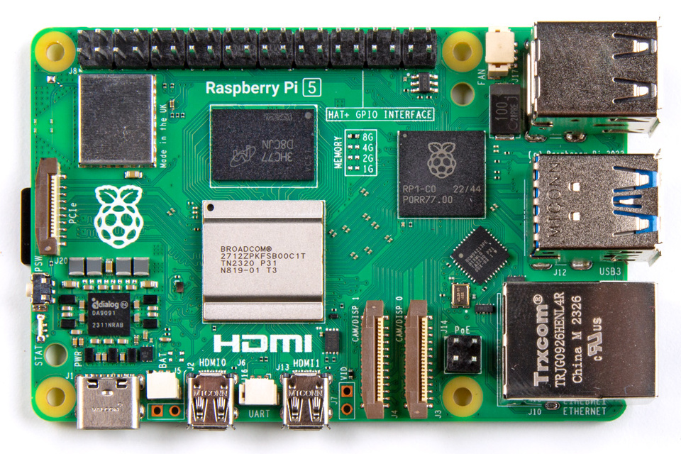
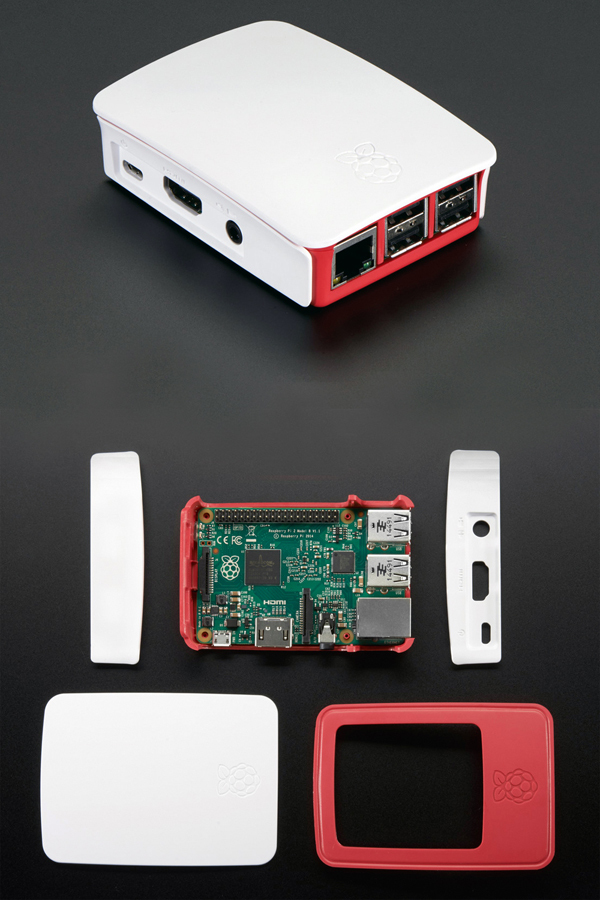
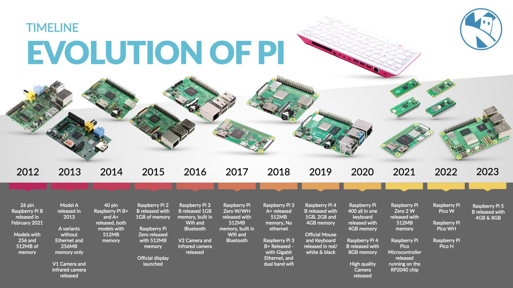
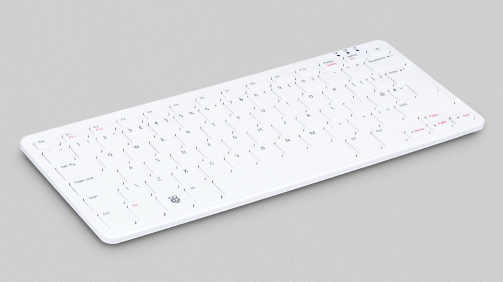
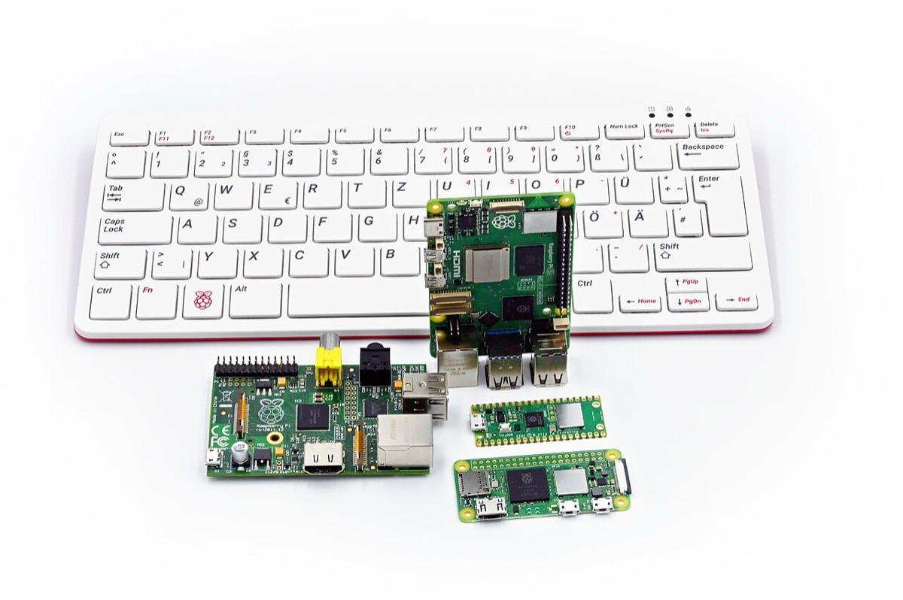

Veille technologique
Raspberry Pi
Qu'est-ce que c'est ?
La veille technologique consiste à surveiller les évolutions technologiques pour identifier les nouvelles tendances et innovations dans un domaine.
Outils et sources de ma veille
- Feedly (agrégateur de flux RSS)
- Raspberry Pi News (actualités officielles)
- Framboise314 (blog projets Raspberry Pi)
- Raspberry Pi Magazine (magazine de projets)
- Raspberry Tips (guides pratiques Raspberry Pi)
- Wikipédia (fiche technique et historique)
- Instructables (tutoriels de projets DIY)
Raspberry Pi ?
Le Raspberry Pi est un nano-ordinateur monocarte, de la taille d'une carte de crédit, conçu par la Fondation Raspberry Pi pour rendre l'informatique plus accessible à tous. Son coût abordable et sa compatibilité avec des systèmes d'exploitation libres comme GNU/Linux, ainsi que Windows 10 et Android Pi, en font une solution idéale pour l'apprentissage et la création de projets.
Au-delà de sa fonction éducative, il incarne une démarche de démocratisation de la technologie, permettant à chacun, débutant ou confirmé, de développer des compétences en informatique et de résoudre des problèmes techniques. Grâce à sa flexibilité, il peut remplacer un ordinateur classique, offrant une alternative économique pour ceux qui n'ont pas accès à des machines coûteuses.

Le tout premier modèle du Raspberry Pi : version 1 B
Histoire du Raspberry Pi
L'histoire du Raspberry Pi débute en 2006, avec la création des premiers prototypes inspirés par le BBC Micro. Après six années de développement, le premier Raspberry Pi voit le jour en 2012. Son objectif principal était de permettre aux jeunes de découvrir l'informatique et de s'y initier à un prix abordable, autour de 30€. Ce projet a permis de démocratiser l'accès à l'informatique, à la fois pour l'éducation et pour l'expérimentation personnelle.
Eben Upton
Pour mieux comprendre l'origine du Raspberry Pi, il est essentiel de se pencher sur son créateur, Eben Upton. Eben Upton est un ingénieur britannique, créateur du Raspberry Pi et fondateur de la Fondation Raspberry Pi. Diplômé en physique et en ingénierie de l'Université de Cambridge, il a ensuite travaillé pour des entreprises prestigieuses telles que Broadcom, Intel et IBM.
Eben Upton
Les premiers prototypes
De 2006 à 2011, Eben Upton a créé des prototypes d'ordinateurs monocartes tout en travaillant chez Broadcom. Inspiré par le BBC Micro, qu'il utilisait à l'école, il a voulu concevoir un ordinateur plus compact et moins cher.

Le BBC Micro modèle B, créé par Acorn Computers et sorti en 1981
Le BBC Micro, vendu autour de 400€ en Angleterre, avait du mal à être acquis par les écoles en raison de son prix élevé. En réponse, Upton a créé une version plus abordable et compacte de cet ordinateur. Au début, ses prototypes étaient réalisés sur de grandes plaques de prototypage, permettant de tester et déboguer facilement.

Le prototype d'Eben Upton basé sur un processeur Atmel
L'idée et son origine
En 2006, Eben Upton, lors de ses travaux sur des prototypes, a constaté que le coût élevé des ordinateurs freinait l'intérêt des jeunes pour l'informatique, contribuant ainsi à une pénurie de professionnels dans le domaine. Cette observation l'a poussé à vouloir créer un ordinateur dix fois moins cher que le BBC Micro, un modèle très populaire dans les années 80. L'objectif était d'offrir un outil accessible à tous pour encourager l'apprentissage de l'informatique. Le nom "Raspberry Pi" a été choisi en référence à une tradition dans l'industrie informatique où plusieurs fabricants ont opté pour des noms fruités, comme Apple ou Acorn. Le "Pi" fait quant à lui référence au langage de programmation Python, utilisé pour le premier design du Raspberry Pi.
La Fondation Raspberry Pi
En 2009, Eben Upton fonde la Fondation Raspberry Pi, une organisation dédiée à l'éducation technologique. L'objectif principal de la Fondation est de structurer le développement du Raspberry Pi et de le rendre accessible aux étudiants. Cette initiative visait à vendre des ordinateurs à environ 30€ pour aider les écoles à enseigner l'informatique et susciter l'intérêt des jeunes pour les métiers technologiques.
Dans cette optique, la Fondation a également introduit Scratch, un langage de programmation destiné aux enfants, permettant ainsi une initiation ludique à la programmation.
Les projets de la Fondation ont eu un impact mondial, avec la création de centres informatiques en Afghanistan et en Afrique du Sud, ainsi que des dons de Raspberry Pi aux écoles britanniques. Parmi les donations notables, on retrouve celle de Google, qui a offert 15 000 appareils en 2013.
Applications possibles
- Serveur web
- Borne d'arcade rétro gaming
- Station météo
- Miroir magique
- Bras robotisé
- Voiture ou drone télécommandé
- Centrale domotique
- Serveur NAS
- Satellite

Raspberry Pi 5
Avantages et Inconvénients
| Avantages | Inconvénients |
|---|---|
| Prix très abordable | Puissance limitée pour les tâches lourdes |
| Faible consommation d'énergie | Stockage sur carte microSD parfois peu fiable |
| Format compact et facile à intégrer | Non idéal pour un usage professionnel intensif |
| Large communauté et beaucoup de ressources | Vendu sans boîtier de protection |
| Polyvalent : serveur, media center, robotique, etc. | Risque de surchauffe sans refroidissement |
| Bon outil pour l'apprentissage de l'informatique | — |

Boîtier officiel du Raspberry Pi
Innovations récentes (2024-2025)
- Compute Module 5 - CM5 Novembre 2023 Version compacte et puissante du Raspberry Pi 5 pour l'industrie et les systèmes embarqués.
- Raspberry Pi AI Kit Mars 2024 Permet d'exécuter de l'intelligence artificielle localement grâce au module Hailo-8L.
- Caméra IA - Sony IMX500 Septembre 2024 Analyse d'image en temps réel directement sur le capteur, sans calcul externe.
- PiEEG-16 - Interface cerveau-machine Septembre 2024 Module pour capter des signaux bioélectriques en temps réel.
- Raspberry Pi Pico 2 W Novembre 2024 Microcontrôleur à bas prix avec Wi-Fi 4 et Bluetooth 5.2 pour les projets IoT.
- Raspberry Pi 500 Décembre 2024 PC tout-en-un dans un clavier avec 8 Go de RAM et double sortie 4K.
Évolution des modèles

- Génération 1
- Raspberry Pi B Avril - Juin 2012
- Raspberry Pi A Février 2013
- Raspberry Pi 1 B+ Juillet 2014
- Raspberry Pi 1 A+ Novembre 2014
- Compute Modules (pour systèmes embarqués)
- Compute Module 1 Avril 2014
- Compute Module 3 Janvier 2017
- Compute Module 3+ Janvier 2019
- Compute Module 4 Octobre 2020
- Compute Module 5 Novembre 2023
- Génération 2
- Raspberry Pi 2 B Février 2015
- Format Zero
- Pi Zero Novembre 2015
- Pi Zero W Février 2017
- Pi Zero WH Janvier 2018
- Pi Zero 2 W Octobre 2021
- Génération 3
- Raspberry Pi 3 B Février 2016
- Raspberry Pi 3 B+ Mars 2018
- Raspberry Pi 3 A+ Novembre 2018
- Génération 4
- Raspberry Pi 4 B Juin 2019
- Raspberry Pi 400 (Clavier) Novembre 2020
- Microcontrôleur Raspberry Pi Pico
- Raspberry Pi Pico Janvier 2021
- Raspberry Pi Pico W Juin 2022
- Raspberry Pi Pico H / WH 2022
- Raspberry Pi Pico 2 W Novembre 2024
- Génération 5
- Raspberry Pi 5 Octobre 2023
- Raspberry Pi 500 (Clavier) Décembre 2024

Raspberry Pi 500
Conclusion
Le Raspberry Pi continue d'évoluer et transforme l'éducation ainsi que la créativité technologique à travers le monde, offrant des possibilités infinies pour des projets personnels ou professionnels.

Raspberry Pi 1, Pi 5, Pi 400, Zero 2 et Pico